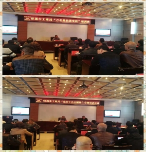

——工作信息
【昭通市工商局组织开展“万名党员进党校”专题培训】11月15日下午，昭通市工商局组织开展“万名党员进党校”专题培训。培训邀请了昭通市委党校党委副书记、常务副校长李晓波作“党的十九大精神”专题辅导。市局机关全体干部职工、部分离退休老党员代表参加培训，市局机关党委书记柯猛主持培训会议。
李晓波老师从大家关心的教育问题开篇，通过生动的比喻和现实的案例，得出学习党的十九大精神不是一句空话。围绕如何学懂弄通做实党的十九大精神，李老师指出要带着信仰学，学出信仰来，带着使命学，学出使命来，带着责任学，学出责任来。李老师还以昭通市委党校创新咨政方式，结合市委党校举办鲁甸县驻村第一书记脱贫攻坚暨大学生村官能力素质提升培训班的案例，以党校人为鲁甸龙头山现场咨政的有关内容为结语，通过生动的语言，典型的事例，深入浅出，使广大工商行政管理干部职工对党的十九大精神有了更深入、更加感性的理解和认识。课堂上，大家时而沉思，时而感慨，笑声不断，掌声连连；李老师的整堂辅导内涵丰富、贴近实际，既有对理论的深刻感悟，又有对实践的提炼升华；既有古今对照，又有中外对比，具有很强的思想性、针对性和指导性，对于广大干部职工具有很强的指导意义。
党课结束后，柯猛书记要求广大工商干部职工切实增强对党的十九大精神的学习领悟和实践，要把开展党性学习与做好本职工作紧密结合起来，处理好工学矛盾，对党员干部，更要带头学深学透，带头践行以知促行、知行合一，按照党员的标准规范言行，争做一名讲政治、有信念，讲规矩、有纪律，讲道德、有品行，讲奉献、有作为的“四讲四有”合格党员。
（供稿：昭通市工商局机关党委 马娅）